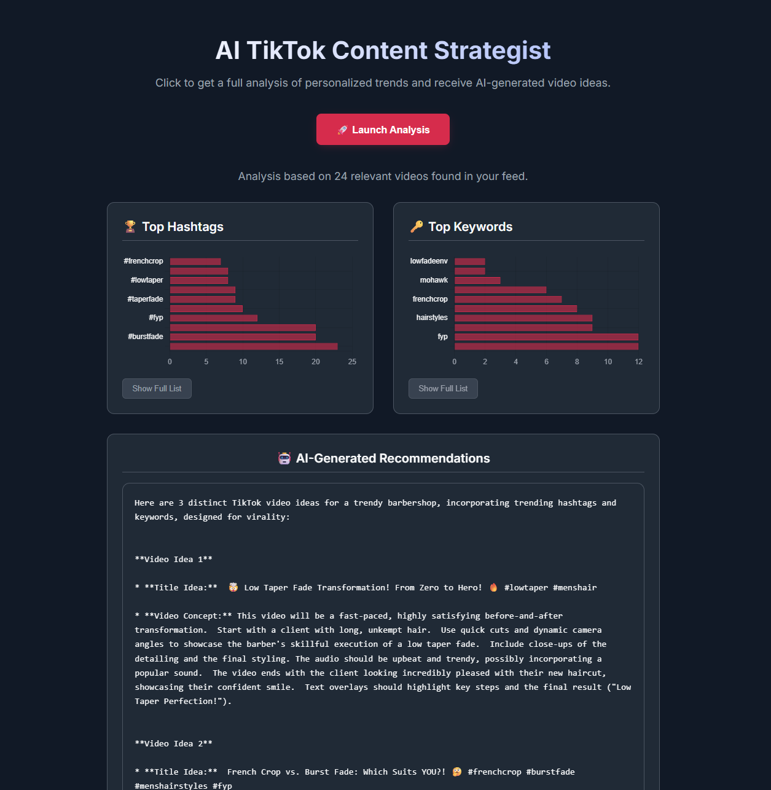

Education
Rutgers University–New Brunswick
Bachelor's Degree, Computer Science (GPA: 4.0)
2024 - 2027Minor: Psychology
Activities: Honors College, ColorStack, Paul Robeson Success Institute
Paramus High School
High Honor Roll (Weighted GPA: 4.86)
2019 - 2024Activities: National Honor Society, Spanish Honor Society, Spanish Club
My Projects
AI-Powered TikTok Trend Analyzer
View demo of the dashboard
A full-stack web application that automates TikTok market research, reducing the time to identify niche content trends from hours to under two minutes.
View on GitHubVault: Secured File Sharing & Message Board
A full-stack application designed to provide teams with a secure digital platform for file-sharing and messaging. It leverages VirusTotal for malware detection and HMAC hash authentication for user verification.
🏆 1st Place Winner at RutgersXFiserv Hackathon
View on GitHubCommut-Ed: Campus Ride-Sharing App
A full-stack ride-sharing web application to connect students traveling to and from campus. Built with a React frontend and a Java Spring Boot backend, the platform enables users to post, search, and join rides in real time.
View on GitHubExperience
Career Accelerator Participant
June 2025 - PresentPariveda | Remote
- Participating in a 6-week software consulting program with workshops on technical skill building & case-based problem solving.
- Applying user-centered design principles to develop a digital solution leveraging AI/ML and smart infrastructure to help regional hotels compete with short-term rental platforms, enhancing personalization and profitability.
- Leading problem discovery, research synthesis, ideation, and solution prototyping to define an AI-powered customer journey, deliver technical architecture recommendations, and present actionable strategies to transform the hospitality experience.
Summer Fellow
June 2025 - PresentThe Takeoff Institute | Remote
- Participating in a 10-week fellowship focused on career development & building technical solutions to expand educational access.
- Designing scalable backend architecture for Takeoff University, specifying AWS S3 for file storage, PostgreSQL for metadata, and ElasticSearch for advanced search; incorporate secure APIs and data encryption to protect student information.
- Researching and documenting database schema with role-based access controls, content tagging, and cohort-specific permissions to enable personalized student experiences; outline an implementation plan to support a secure, nationwide digital rollout.
Ignite Summer Fellow
May 2025 - PresentAI4ALL | Remote
- Enhancing AI/ML engineering skills through a 20-week accelerator with industry mentorship & hands-on technical projects.
- Engineered Startup Success Predictor: a production-ready ML pipeline (Python, scikit-learn, Gradient Boosting Regression) processing 5,000+ startup records to forecast viability and surface key revenue/funding drivers.
Peer Tutor - Computer Science
February 2025 - PresentRutgers School of Arts and Sciences Honors Program | New Brunswick, NJ
- Provide one-on-one and group tutoring sessions, teaching data structures like linked lists, trees, graphs, and hash tables.
- Develop study materials such as coding exercises and practice problems to enhance student comprehension.
- Assist students in debugging and optimizing Java code, improving their problem-solving skills and coding efficiency.
Barber and Entrepreneur
July 2020 - PresentFade O’Clock Shop / Next Level Above Barbershop | New Brunswick, NJ
- Performed 15+ haircuts/week for 4 years, leading to consistent customer satisfaction.
- Conducted market research to create a product line and sold 100+ branded merchandise within the last year.
- Developed a website & app for scheduling appointments and accepting online payments via Apple Pay/Credit Card.